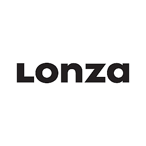
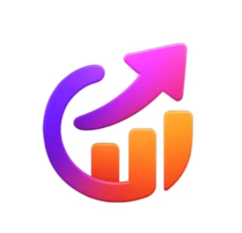
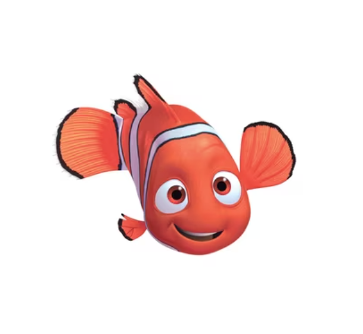
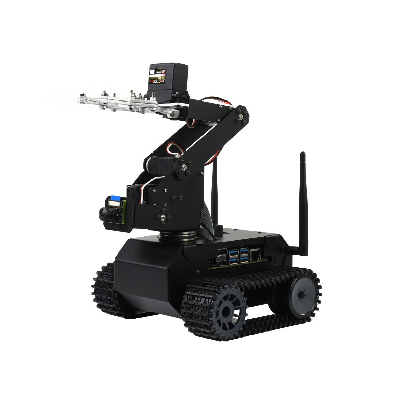

Software projecten

Bachelorproef bij Lonza
Voor mijn bachelorproef bij Lonza heb ik een systeem gebouwd dat technische schema's, documentatie en magazijninformatie met elkaar verbindt in een Neo4j knowledge graph. Je kan een foto van een onderdeel nemen of in een interactieve smart PDF op een component klikken, en meteen zie je de magazijnlocatie, de voorraad en de documentatie. Via OCR en vector similarity search wordt het juiste onderdeel herkend. Daarnaast kan je via een lokale chatbot vragen stellen over de documentatie.

Face recognition
Dit is een schoolproject voor het vak AI Frameworks waarin ik een systeem bouwde dat klasgenoten herkent op foto's. Ik verzamelde en labelde zelf de data uit video's, trainde YOLO-modellen en testte gezichtsherkenning met InsightFace. Uiteindelijk combineerde ik meerdere methodes tot één voorspelling. Met een Gradio-webinterface en SAM3 krijgt elke herkende persoon ook een gelabeld segmentatiemasker.

PaddenstoelAI
PaddenstoelAI is een machine-learningproject dat voorspelt of een paddenstoel eetbaar of giftig is, op basis van kenmerken zoals de hoed, de steel, de lamellen, het habitat en het seizoen. Ik trainde en vergeleek er meerdere modellen op, waaronder Random Forest, XGBoost en een neuraal netwerk. Via een webinterface vul je de kenmerken in, kies je een model en krijg je een voorspelling met een betrouwbaarheidspercentage.

Tweede kans
Ah ja, de klassieke to-do-app die elke software engineer maakt :) Maar dan met een twist: Tweede kans houdt niet je taken bij, maar je tweedehandsspullen. Per item noteer je wat je ervoor betaald hebt en voor hoeveel je het verkocht hebt, en de app rekent automatisch je winst of verlies uit. Je ziet ook je rendement en hoe lang het duurde om iets te verkopen. Zo weet je meteen of je deals op Vinted of 2dehands echt iets opbrengen.

Webshop
Dit is een webshop voor vissen die ik bouwde in PHP met een MySQL-database, als schoolopdracht voor webdesign. Klanten kunnen een account maken, inloggen, producten zoeken, in een winkelmandje stoppen en bestellen. Een admin kan producten toevoegen of aanpassen en klanten beheren. Als decor draait er een video van een aquarium op de achtergrond.
Level Control
Level Control is een simpele 2D-platformer voor mobiel die ik tijdens de coronalockdown maakte. Het was mijn allereerste ICT-project, nog voordat ik aan mijn ICT-opleiding begon.

Volautomatisch magazijn
Voor dit schoolproject bouwden we met een team van acht een volautomatisch magazijn, waarin kleine robots zelfstandig rondrijden en pakjes verplaatsen. Mijn deel was het computervisiegedeelte: zorgen dat een robot zijn omgeving kan zien en afstanden kan inschatten. Dat moest kunnen met enkel een eenvoudige camera. Alles draait lokaal op een Jetson Nano.